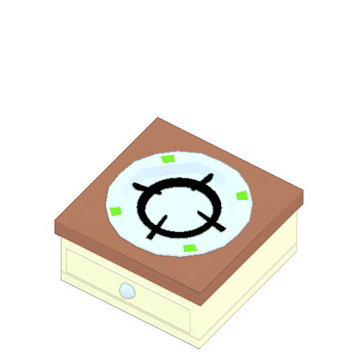

안전 요리판

◾ 식품을 위에 두어도 타지 않는다.
◾ 가스 오버라이드를 사용해도 요리가 타지 않고 더 빠르게 요리할 수 있다.
◾ 가스 리미터를 사용하면 속도가 느려진다.
◾ 플레이어는 이 기계에 휴대할 수 있는 모든 항목을 놓을 수 있다.
◾ 요리사 가스 리미터를 사용하면 더 느리게 연소된다.
◾ 플레이어는 이 기기에 휴대할 수 있는 모든 항목을 놓을 수 있다.
◾ 플레이어는 이 기기에서 음식을 결합할 수 있다.
◾ 같은 방에 서빙 테이블의 2타일 범위 내에 배치하면 해당 테이블에 음식을 기다리는 중 있는 고객은 음식 대기 시간 지속 시간이 20% 감소한다.
◾ 캐비닛에 청사진을 넣고 연구데스크로와 상호작용을 한다면 안전 요리판과 위험한 요리판 둘 중 하나로 업그레이드 된다.
◾ 상호작용이 필요없고 식품이 타지 않기 때문에 자동화에 사용된다.